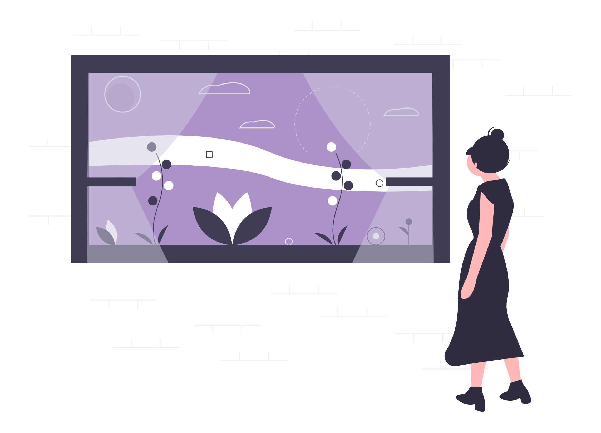
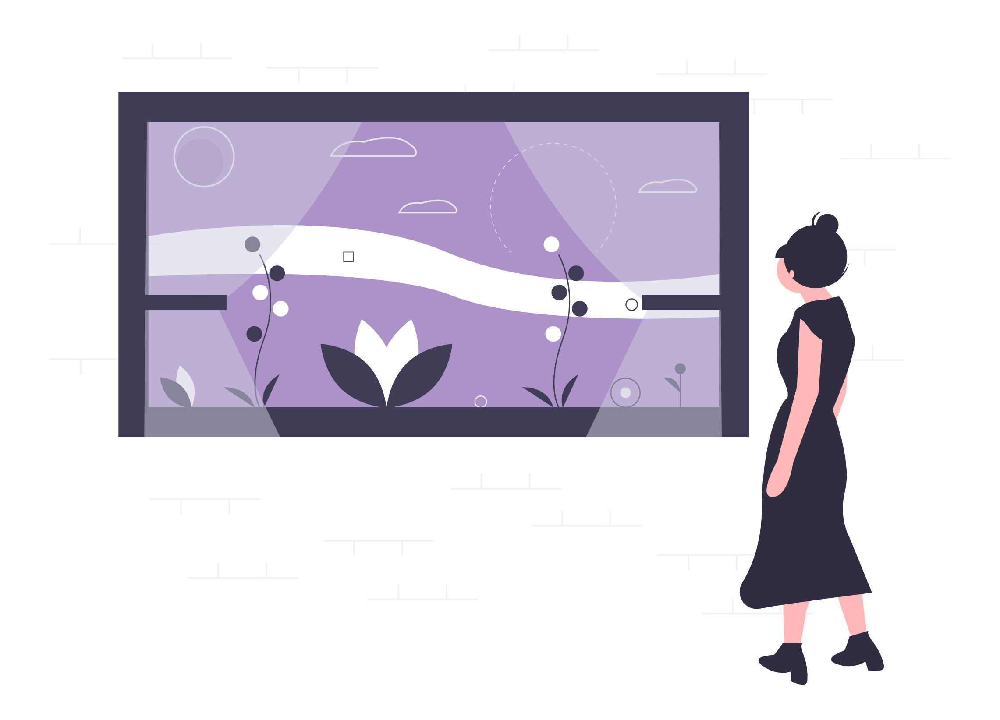

Mehr Über Meine Geschichte
Meine Geschichte
Alles begann im Jahr 2020 – in einer Zeit, in der ich versuchte, Gewicht zu verlieren und mir die Frage stellte:
„Warum sollten gesunde Desserts nicht auch köstlich sein können?“
Dieser einfache Gedanke wurde zum Ausgangspunkt eines Weges, den ich heute mit Leidenschaft gehe.
Ich nahm mir vor, meinen nächsten Kuchen selbst zu backen. Ja – ich dachte monatelang darüber nach, suchte nach Rezepten und lernte bei jedem Schritt etwas Neues dazu.
Zwei Jahre vergingen, zwei Jahre voller Veränderungen. Ich zog zweimal in ein neues Land, musste mich neu orientieren, schwierige Phasen überwinden … und für das Backen blieb kaum Zeit.
Doch die Begeisterung blieb. Ich dachte weiterhin an Desserts, las Rezepte, experimentierte – und natürlich blieb mir so manche peinliche Situation nicht erspart.
Eine zwei Zentimeter dicke Schokoladenganache? Ja – und die Löffel der Gäste verbogen sich prompt. 🍫
Kirschkerne in der Creme? Auch ja – eine echte Überraschung für die Zähne! 🍒😅
Mit jedem Versuch wurde ich besser. Freunde und Gäste warteten bereits gespannt auf das nächste Experiment – und genau diese Vorfreude war meine größte Inspiration.
Bis uns eines Tages Freunde der Familie einluden. Ich fragte mich:
„Warum backe ich nicht einfach einen Kuchen?“
Wobei „backen“ relativ war – die Böden kaufte ich ehrlich gesagt im Supermarkt. 😄
Ich bereitete eine Creme zu, fand ein paar übrig gebliebene Früchte, gab etwas Alkohol hinzu (für den Kuchen, natürlich!) – und voilà:
Mein erstes kleines Werk. Perfekt für eine Feier, besonders wenn die Gäste schon ein wenig vorgeglüht hatten.
Auch wenn ich keinerlei Erfahrung im Backen hatte, ließ ich mich niemals aufhalten. Meine Idee war einfach: Desserts ohne Zucker können genauso köstlich sein. Also begann ich zu probieren, zu mischen und eine Verbindung aus Genuss und Leichtigkeit zu schaffen. Und es hat funktioniert. 🎂